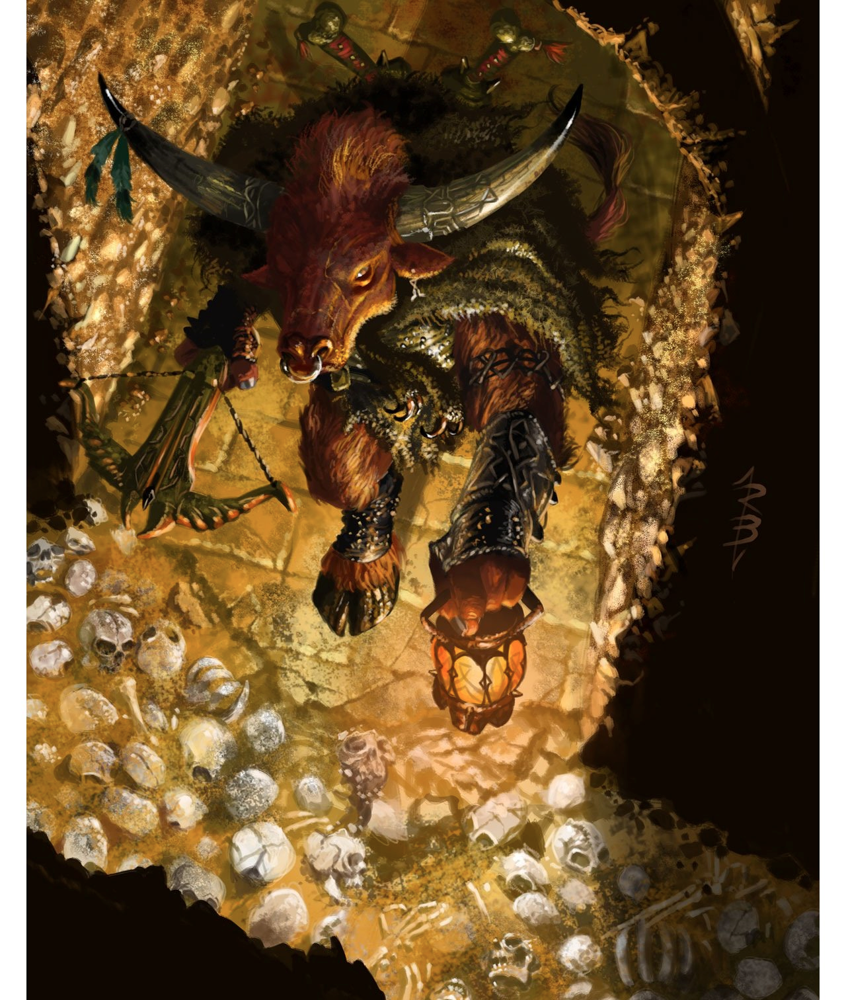

Melvin was born into the minotaur tribes of the hills south of the Wyvernwatch Mountains. As a child he was part of a raid on the Hammerfist Holds where his
family were killed and he was left behind. Marduk Goldbludgeon was one of the Holds' defenders and took pity on the young minotaur. Raised in his new
adoptive father's monastic and moral tradition Melvin grew to be a selfless defender of the people of Elsir Vale. Even when his Marduk disappeared Melvin
upheld his values. When Tusk attacked Melvin was among the first to volunteer to serve.